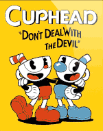
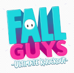
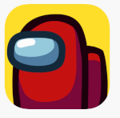

1. Cuphead
Cuphead é um jogo eletrônico de run and gun e plataforma criado pelos irmãos canadenses Chad e Jared Moldenhauer através da Studio MDHR. O jogo foi inspirado no estilo de animação Rubber hose usado em desenhos animados da Era de Ouro da animação americana, como o trabalho dos estúdios Fleischer Studios, Warner Bros. fonte: Wikipedia
2. Pokémon Go
Pokémon GO é um jogo eletrônico free-to-play de realidade aumentada voltado para smartphones. O jogo é desenvolvido entre a Niantic, Inc., a Nintendo e a The Pokémon Company para as plataformas iOS e Android. fonte: Wikipedia
3. Fall Guys
Fall Guys é um jogo eletrônico de plataforma battle royale desenvolvido pela Mediatonic. Foi lançado pela Devolver Digital para Microsoft Windows e PlayStation 4 em 4 de agosto de 2020. fonte: Wikipedia
4. Among Us
Among Us é um jogo eletrônico online, dos gêneros jogo em grupo e sobrevivência, desenvolvido e publicado pelo estúdio de jogos estadunidense InnerSloth. fonte: Wikipedia